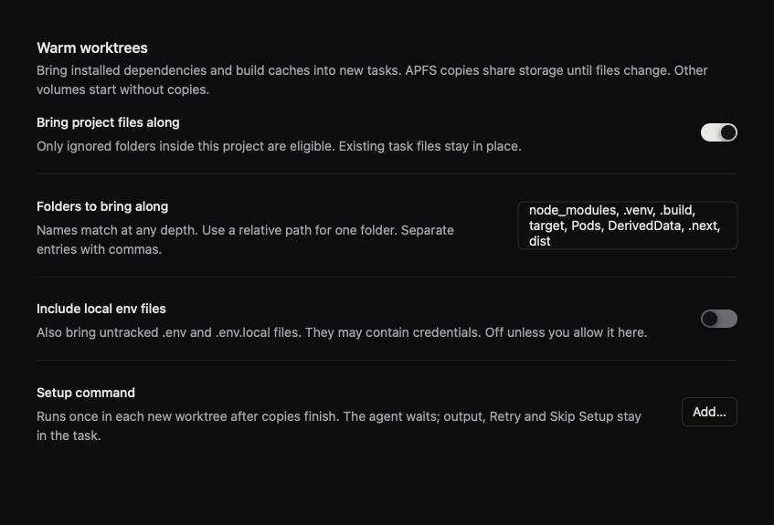
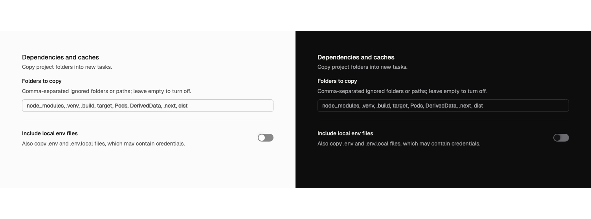
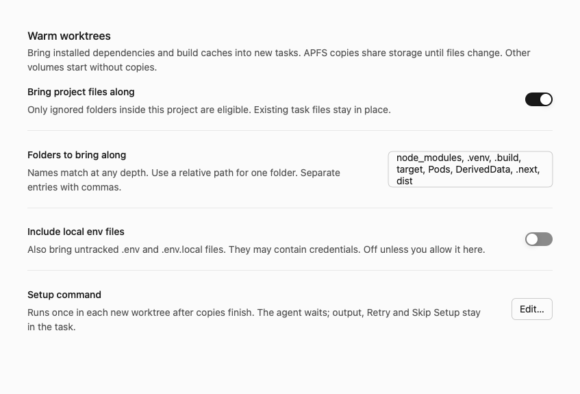
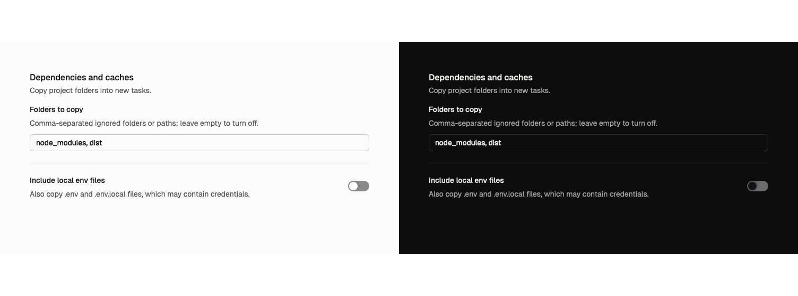
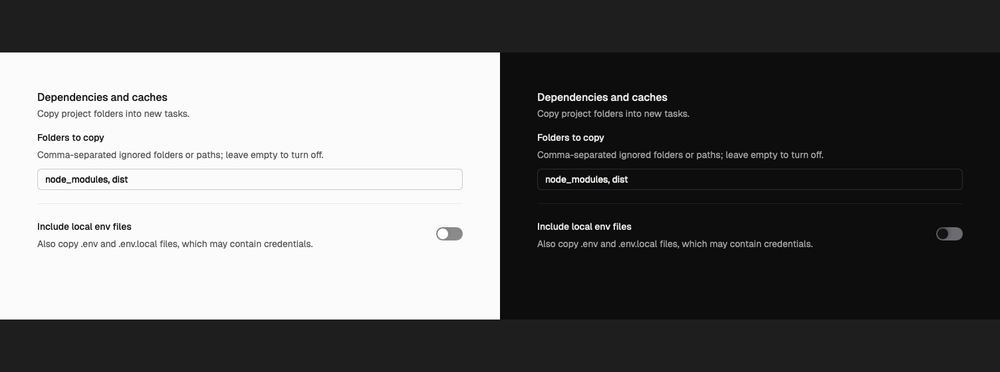
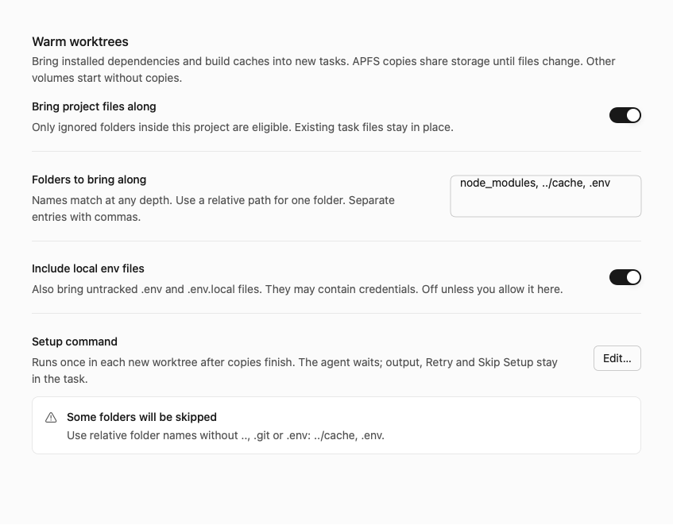
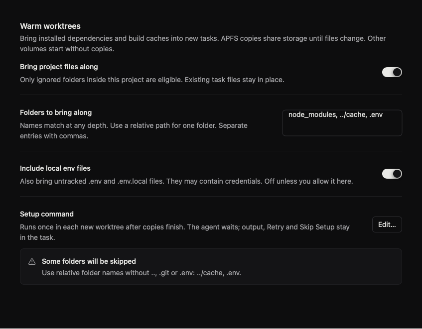
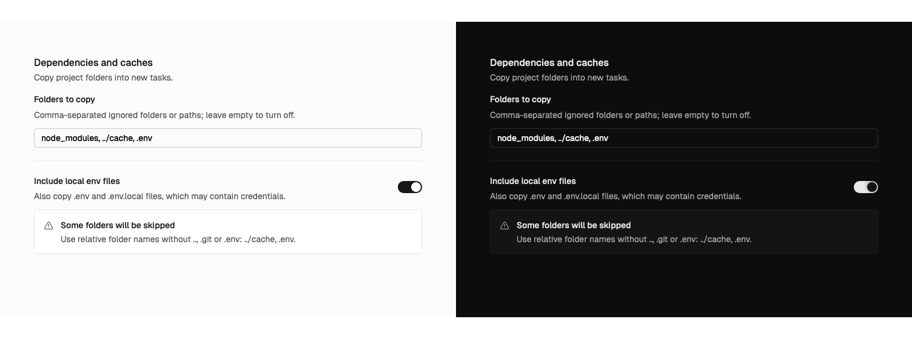
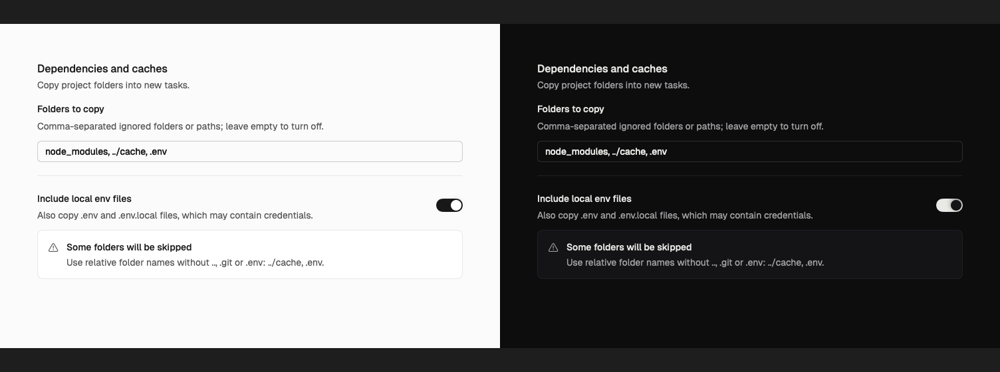

Default: reference and revised light/dark preview


Original references compared with the requested revision. The design review intentionally removes the old switch and Setup row and replaces the multiline field.








